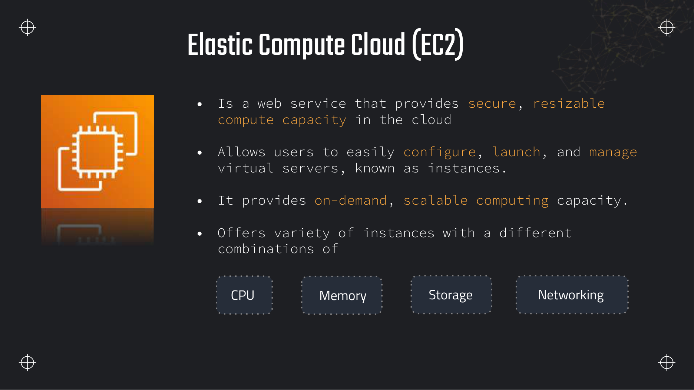
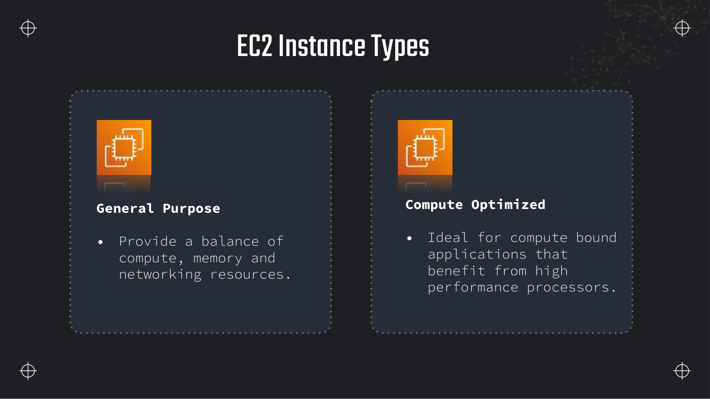
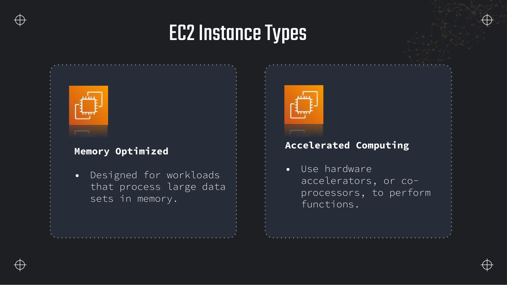
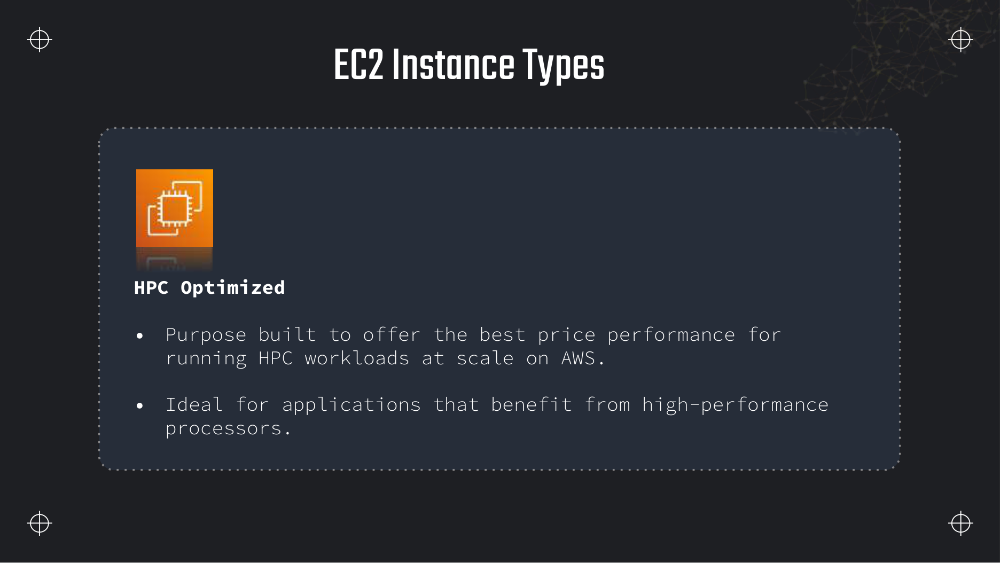
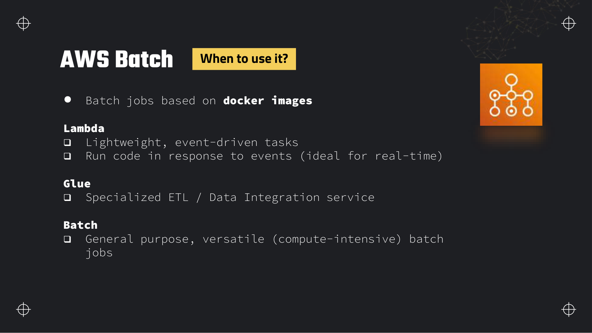
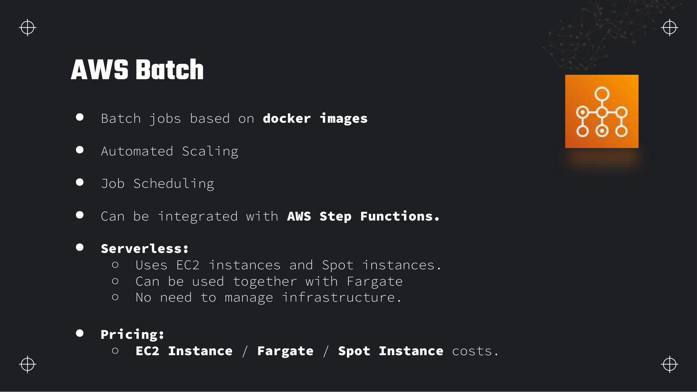
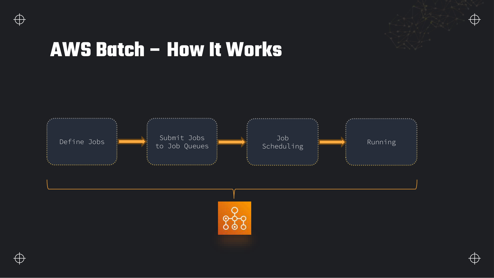
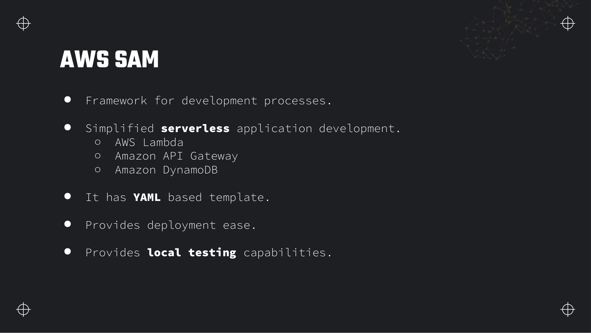
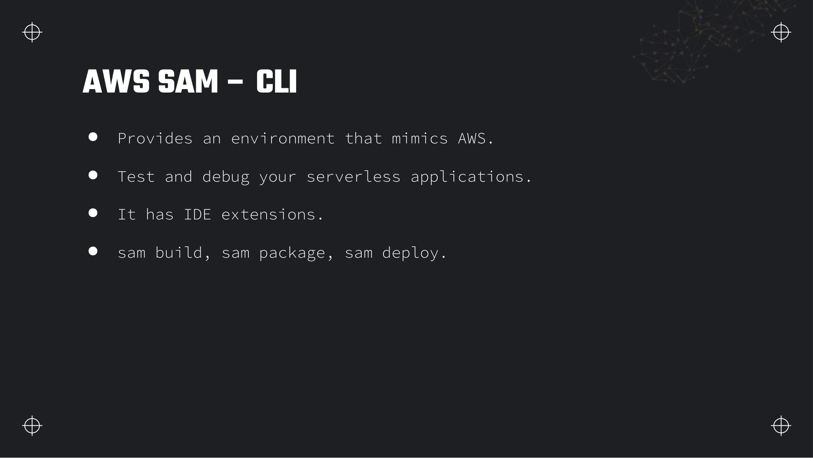
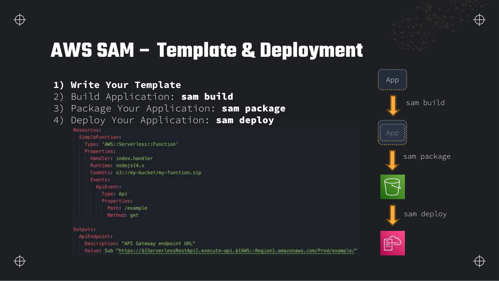

Lectures in this section
Compute choices underpin EMR clusters, Glue alternatives, Batch ETL, and Lambda packaging. See also Section 4 (Glue) and Section 5 (Lambda).
- Amazon EC2 — virtual servers in the cloud ~6:00 Slides 411–412
- EC2 instance types and naming ~8:00 Slides 414–417
- AWS Batch — Docker batch jobs at scale ~8:00 Slides 419–421
- AWS SAM — serverless application model ~6:00 Slides 423–425
Amazon EC2
Amazon Elastic Compute Cloud (EC2) provides resizable virtual servers (instances) in the cloud. For data engineering, EC2 is the foundation under EMR, self-managed Spark, Kafka, custom ETL workers, and Batch compute environments.

Why data engineers use EC2
- EMR and self-managed Spark — cluster nodes are EC2 instances; family choice drives shuffle performance.
- Batch and container jobs — Batch launches EC2 or Fargate for Docker workloads.
- Custom ingestion agents — long-running pollers, FTP bridges, legacy protocol adapters.
- Instance store for temp data — local NVMe for high-throughput scratch space during sort-heavy jobs.
Purchasing options
| Option | Cost | Commitment | Data workload fit |
|---|---|---|---|
| On-Demand | Highest per hour | None | Dev/test, unpredictable jobs, primary EMR master nodes |
| Reserved Instances / Savings Plans | Up to ~72% off On-Demand | 1 or 3 years | Steady-state Redshift-adjacent workers, always-on ingestion |
| Spot Instances | Up to ~90% off On-Demand | Interruptible with 2-min notice | EMR task nodes, Batch compute environments, fault-tolerant Spark |
| Dedicated Hosts | Premium | Physical server dedicated to you | License compliance (SQL Server, Oracle BYOL) |
EBS-optimised instances and instance store
EBS-optimised instances dedicate network bandwidth to EBS volumes — important when shuffle spills to disk or HDFS runs on EBS. Instance store (ephemeral NVMe on i, d, and some r families) offers higher IOPS but data is lost on stop/terminate. Use instance store for temporary Spark shuffle; persist results to S3.
Placement groups
- Cluster — instances in the same AZ, low latency (HPC, tightly coupled Spark).
- Spread — instances on distinct hardware (critical singleton nodes).
- Partition — groups within AZs (large Kafka, HDFS-style topologies).
EC2 instance types
Instance types combine CPU, memory, storage and networking. AWS names them with a family letter, generation number, optional attributes, and size.
Naming convention
Example: r6gd.4xlarge — r = memory optimised, 6 = sixth generation, g = Graviton (ARM), d = local NVMe instance store, 4xlarge = size within the family.

m, t) balance CPU, memory and network — Glue development bastions, small ingestion workers. Compute Optimized (c) — high CPU for compression, encoding, video transcoding and CPU-bound transforms.
r, x, z) — large in-memory Spark, SAP HANA-style workloads, Redis on EC2. Accelerated Computing (p, g, inf, trn) — GPUs and custom chips for ML training and inference.i, d, h) — local NVMe for high sequential I/O. EMR task nodes processing terabyte shuffles, HDFS on instance store, log aggregation buffers.
hpc) — tightly coupled scientific simulation. Less common in DEA-C01 unless a question mentions HPC or MPI workloads at scale.| Family | Letter | Data engineering workload |
|---|---|---|
| General Purpose | m, t | Bastion hosts, orchestration agents, moderate ETL |
| Compute Optimized | c | Compression, encoding, CPU-heavy UDFs |
| Memory Optimized | r, x | Spark executors, in-memory aggregations, large joins |
| Storage Optimized | i, d | Local NVMe shuffle, HDFS data nodes, high IOPS staging |
| Accelerated | g, p | ML feature extraction, GPU-accelerated transforms |
| HPC Optimized | hpc | Scientific simulation, genomics — rarely the DEA default |
r or x. "Local NVMe for temporary high-throughput storage" → i or d. "Video transcoding or compression" → c. "Lowest cost for fault-tolerant parallel workers" → Spot task nodes.What data engineers actually pick
Deck slides list families; production clusters map workloads to instance letters. The pattern repeats across EMR, self-managed Spark on EC2, and Batch compute environments.
| Workload signal | Family | Example sizes | Why |
|---|---|---|---|
| Balanced Spark executors, moderate shuffle | m6i, m7g | m6i.4xlarge | Even CPU/memory ratio — default for general ETL workers when neither dimension dominates |
| Large joins, in-memory aggregations, wide caches | r6i, r7g, x2idn | r6i.8xlarge | High memory per vCPU — working set must fit RAM or Spark spills to disk |
| Compression, encoding, Parquet rewrite, CPU-bound UDFs | c6i, c7g | c6i.2xlarge | Maximum vCPU per dollar for serial CPU work without large memory needs |
| Shuffle spill, local scratch, HDFS data nodes | i3, i4i, d3 | i3.4xlarge | NVMe instance store — terabytes of local IOPS; data lost on stop/terminate |
| ML feature extraction, GPU transforms | g5, p4d | g5.xlarge | Only when the job uses CUDA — general ETL rarely needs GPU; exam mentions ML inference explicitly |
| Cost-sensitive sustained workers | m7g, r7g (Graviton) | r7g.2xlarge | Up to ~20% better price/performance — requires ARM-compatible binaries (rebuild Docker images, verify Spark native libs) |
g suffix) runs ARM64. x86-only JARs, proprietary ODBC drivers, or legacy C extensions fail at runtime. Validate in dev before committing a three-year Savings Plan on Graviton.AWS Batch
AWS Batch runs containerised batch jobs at any scale. You define jobs as Docker images; Batch handles provisioning, queuing and scaling the underlying compute — EC2, Spot or Fargate — without you managing a cluster scheduler.

Batch versus Lambda versus Glue versus EMR
| Service | Runtime limit | Packaging | Cost model | When it wins |
|---|---|---|---|---|
| Lambda | 15 minutes max | Zip/container up to 10 GB | Per invocation + GB-second | Event-driven, lightweight, sub-minute tasks |
| Glue | No hard limit (job timeout configurable) | PySpark/Scala scripts, Glue libs | DPU-hour | Managed Spark ETL, Data Catalog integration |
| Batch | No limit (job definition timeout) | Any Docker image | EC2/Fargate/Spot underlying cost | Custom container, genomics, rendering, HPC-style batch |
| EMR | Cluster lifetime | Spark/Hive/Hadoop ecosystem | EC2 (+ EMR premium) per hour | Large Spark/Hive clusters, interactive notebooks |

How Batch works

AWS Batch — submit → queue → compute environment → running job
Batch on Fargate versus EC2
- Fargate — no instance management; pay per vCPU/memory per second. Good for variable job sizes and when you do not want to manage AMIs.
- EC2 / Spot — cheaper at sustained scale; you choose instance types and can use GPU instances. Spot compute environments scale to zero when the queue is empty.
Array jobs, dependencies and multi-node parallel jobs
- Array jobs — run the same job definition thousands of times with a unique index (
AWS_BATCH_JOB_ARRAY_INDEX) — parametric sweeps over S3 prefixes. - Job dependencies — job B starts only after job A succeeds (
dependsOn) — simple DAG without Step Functions. - Multi-node parallel jobs — MPI-style workloads across multiple containers in one job (HPC, large parallel simulations).
Retry strategies and evaluateOnExit
Job definitions specify retryStrategy with an attempts count and optional evaluateOnExit rules. Match the exit code or reason and either retry or exit — so Spot interruption (StatusReason containing "Spot") retries, but a bad input file exit code 2 fails fast without wasting cluster hours.
{
"retryStrategy": {
"attempts": 5,
"evaluateOnExit": [
{
"onStatusReason": "Host EC2*",
"action": "retry"
},
{
"onReason": "OutOfMemoryError*",
"action": "exit"
},
{
"onExitCode": "2",
"action": "exit"
}
]
}
}Fair-share scheduling and compute environment limits
Multiple job queues can share one compute environment. Fair-share scheduling allocates capacity proportionally across queues based on configured weights — a long-running low-priority ETL queue cannot starve an urgent SLA queue entirely. Set maxvCpus on the compute environment as a soft ceiling: Batch scales out Spot/On-Demand instances until total vCPUs hit the cap, then jobs queue. This prevents runaway cost when a bug submits ten thousand array jobs.
- SPOT_CAPACITY_OPTIMIZED — allocation strategy picks Spot pools with the most available capacity, reducing interruption rate versus lowest-price Spot.
- Order of capacity — On-Demand base plus Spot for overflow is common; pure Spot for fault-tolerant genomics or rendering.
Batch on EKS
AWS Batch on Amazon EKS schedules Batch jobs onto an existing Kubernetes cluster instead of EC2 compute environments you manage separately. Use it when the organisation already runs EKS for microservices and wants batch workloads on the same node groups with unified IAM and observability. Batch still handles job queues and definitions; EKS provides the underlying pod placement. See Section 17 (EKS) for cluster setup.
AWS SAM
AWS Serverless Application Model (SAM) is an open-source framework that extends CloudFormation with shorthand for Lambda, API Gateway, DynamoDB and other serverless resources. SAM is a CloudFormation transform — sam deploy expands the concise template into full CloudFormation and creates a changeset.

AWS::Serverless::Function). The transform macro converts them to vanilla CloudFormation resources at deploy time.
sam local invoke), and deploy. Use it to test Lambda handlers against sample S3 events before pushing to AWS.
template.yaml → sam build (compile, vendor deps) → sam deploy (package to S3 if needed, create/update CloudFormation stack).AWSTemplateFormatVersion: '2010-09-09'
Transform: AWS::Serverless-2016-10-31
Description: Ingest raw CSV uploads into staging prefix
Globals:
Function:
Timeout: 120
Runtime: python3.12
MemorySize: 512
Resources:
IngestFunction:
Type: AWS::Serverless::Function
Properties:
Handler: app.handler
CodeUri: src/
Environment:
Variables:
STAGING_BUCKET: !Ref RawBucket
Policies:
- S3ReadPolicy:
BucketName: !Ref RawBucket
- S3WritePolicy:
BucketName: !Ref RawBucket
Events:
NewCsvUpload:
Type: S3
Properties:
Bucket: !Ref RawBucket
Events: s3:ObjectCreated:*
Filter:
S3Key:
Rules:
- Name: prefix
Value: raw/
- Name: suffix
Value: .csv
RawBucket:
Type: AWS::S3::Bucket
Properties:
BucketName: dea-lab-ab-4821
Outputs:
IngestFunctionArn:
Value: !GetAtt IngestFunction.Arncd sam-ingest/
sam build
sam deploy --guided
# Stack name: dea-ingest
# Region: us-east-1
# Confirm changes before deploy: Y
aws s3 cp data/customers.csv s3://dea-lab-ab-4821/raw/customers/customers.csv
# Lambda fires on ObjectCreated — check CloudWatch Logs for the functionDeeper detail and exam edge cases
Purchasing economics, instance limits that constrain container density, and Batch operational knobs the deck slides only name in passing.
Limits and quotas that decide answers
| Limit | Value | Adjustable? | Why it matters |
|---|---|---|---|
| Spot interruption notice | 2 minutes (instance-action metadata) | Hard | Jobs must checkpoint or finish within the window — master nodes and stateful HDFS cannot use Spot |
| Linux EC2 minimum billable | 60 seconds per instance launch | Hard | Sub-minute Batch jobs still pay for one minute of instance time |
| Lambda maximum duration | 15 minutes | Hard | Anything longer needs Batch, ECS, or EMR — common exam redirect |
| Batch array job size | Up to 10,000 child jobs (default quota) | Soft | Large parametric sweeps need array jobs, not one Step Functions Map with 10,000 Lambdas |
| Batch multi-node parallel | Up to 128 nodes per job (default) | Soft | MPI workloads need multi-node job definition with nodeRangeProperties |
| ENI / IP limits per instance type | Varies by type (e.g. t3.micro low, m5.4xlarge higher) | Hard | ECS/Batch on EC2 — each task needs an ENI; dense packing hits network interface quota before CPU |
| EBS-optimised baseline throughput | Varies by instance size (e.g. 0.25–12.5 Gbps) | Hard (type/size) | Shuffle-heavy Spark on EBS without EBS-optimised instances contends with network traffic |
| Instance store persistence | Ephemeral — lost on stop/terminate | Hard | NVMe shuffle data must be recomputed or copied to S3 before instance recycle |
| Placement group cluster | Single AZ only | Hard | Low-latency HPC/Spark within AZ; cannot span AZs in one cluster group |
| SAM local invoke | Docker on developer machine; no real AWS services | Hard | Cannot test VPC, actual DynamoDB, or IAM role chaining locally without mocks |
| CloudFormation stack rollback | Automatic on failed create; update rollback on failed change | Hard | SAM deploy inherits this — a bad template leaves stack in ROLLBACK_COMPLETE (must delete before retry) |
What you actually pay for
| Billed dimension | Unit | How to spend less |
|---|---|---|
| EC2 On-Demand | Per-second (60 s minimum Linux) | Spot for fault-tolerant workers; right-size instance family |
| Spot Instances | Per-second, price varies by pool | SPOT_CAPACITY_OPTIMIZED; checkpoint to S3; mixed On-Demand base |
| Reserved Instances / Savings Plans | Upfront or hourly commitment 1–3 years | Cover steady baseline; break-even typically 6–12 months vs On-Demand at >70% utilisation |
| EBS volumes | GB-month + provisioned IOPS/throughput | gp3 baseline for shuffle; delete volumes on terminate; instance store for temp data |
| Batch service fee | No charge — pay underlying compute only | Batch is cheaper than Glue for long non-Spark container jobs (no DPU premium) |
| Fargate (Batch on Fargate) | vCPU-second + GB-second | Scale to zero when queue empty; EC2 Spot cheaper at sustained high utilisation |
| Data transfer | Cross-AZ, cross-Region, internet egress | Keep Batch compute in same AZ as S3 bucket where possible; VPC endpoints for S3 |
| NAT Gateway | Per-hour + per-GB processed | VPC endpoints for S3/ECR so Batch nodes pull images without NAT |
r6i.4xlarge left on over a weekend costs more than the entire pipeline output is worth. Use Spot task nodes with On-Demand masters only.Traps that catch people
- Spot on master node — EMR or Batch coordinator on Spot loses cluster state on reclaim. Masters and critical singletons stay On-Demand; workers use Spot.
- No checkpoint within 2 minutes — Spot sends two-minute warning via instance metadata. Jobs processing hours of work without periodic S3 checkpoints restart from zero.
- Instance store assumed durable — Stop (not terminate) an instance with instance store volumes — data survives stop/start on same host, but hardware failure or stop on different hardware loses data. Treat as ephemeral.
- EBS without EBS-optimised — General-purpose instances share network with EBS; shuffle-heavy Spark saturates both. Enable EBS-optimised or use
i/dNVMe families. - maxvCpus ignored — Compute environment
maxvCpusis a soft ceiling Batch respects, but misconfiguring it to account maximum causes runaway Spot scaling during array job floods. - Batch vs Glue for Spark — Batch runs your Docker image; Glue runs managed Spark with DPU billing. A six-hour PySpark ETL belongs on Glue or EMR, not Batch — unless the requirement is a custom non-Spark binary.
- Batch vs Glue for long non-Spark — A 48-hour genomics pipeline in a custom container on Batch costs EC2/Spot only. Glue charges DPU-hours even when the job is not Spark-optimised.
- sam local limitations — Local invoke runs Lambda in Docker on your laptop — no real VPC peering, no actual RDS Proxy, no KMS decrypt against production keys. Integration tests need deployed stacks.
- SAM drift — Manual console changes to Lambda memory or IAM do not update the SAM template. Next
sam deploymay revert them or fail — treat CloudFormation stack as source of truth. - Graviton without ARM build — Deploying x86 Docker images to
m7gBatch nodes fails at pull or runtime. Multi-arch builds (docker buildx) required.
Troubleshooting playbook
| Symptom | Most likely cause | What to check / fix |
|---|---|---|
| Batch jobs stuck in RUNNABLE | Compute environment at maxvCpus or insufficient Spot capacity | Batch console → CE → desired vCPUs vs max; try SPOT_CAPACITY_OPTIMIZED; raise max or add On-Demand CE |
| Spot job retries endlessly | Missing evaluateOnExit for permanent failures | Job definition retry rules — exit on bad data exit codes; retry only on Spot/host errors |
| Spark shuffle disk full on EBS | Undersized gp3 or wrong instance family | Increase EBS size/IOPS; move to i3/i4i instance store; reduce partition count |
| Cannot pack more containers on EC2 | ENI limit per instance type | AWS docs ENI limits for type; use larger instance or awsvpc mode with fewer tasks per host |
sam deploy fails rollback | Template error or resource limit | CloudFormation Events tab; fix template; delete stack in ROLLBACK_COMPLETE before redeploy |
| EMR task nodes die mid-job | Spot reclaim without speculation | Enable Spark speculative execution; dynamic allocation; Spot-only on task instance group |
| High cross-AZ transfer on Batch | Compute and S3 in different AZs | Align subnet AZ with bucket access pattern; S3 gateway endpoint in VPC |
| Lambda timeout on large file | 15-minute hard limit | Move to Batch job definition with same container image in ECR |
Production patterns
A typical batch analytics pipeline uses Step Functions to orchestrate: validate input (Lambda) → submit Batch array job (one container per S3 prefix) → merge results (Glue or Redshift COPY). Compute environment: managed EC2 with Spot primary, On-Demand base capacity for queue headroom, maxvCpus set to budget cap. Instance type m6i for balanced workers or r6i when Spark executor memory is the bottleneck.
Batch Spot pipeline with checkpointing
aws batch submit-job \
--job-name dea-transform-array \
--job-queue dea-etl-queue \
--job-definition dea-transform:3 \
--array-properties size=64 \
--parameters inputPrefix=s3://dea-lab-ab-4821/raw/shards/Anti-pattern: Running a persistent EMR cluster On-Demand for one nightly 90-minute job — pay 23.5 idle hours daily. Prefer transient EMR with auto-termination, Batch with scale-to-zero, or Glue scheduled jobs.
Where this fits with the rest of the exam
Compute choices underpin nearly every pipeline section. EC2 is the substrate for EMR (Spark clusters), Glue (managed Spark on shared infrastructure), and containers (ECS/EKS). Lambda limits in Section 5 explain when Batch takes over.
- Section 4 (Glue) — managed Spark ETL with DPU billing when you do not need a custom container.
- Section 5 (Lambda) — event-driven, sub-15-minute, no cluster management — SAM deploys Lambda stacks.
- Section 13 (EMR) — long-running Spark/Hive when you need the full Hadoop ecosystem interactively.
- Section 17 (EKS) — Batch on EKS when Kubernetes is already the platform standard.
Interview questions
Answer each one out loud before opening it.
When would you use Spot instances for a data pipeline, and what safeguards are required?Cost
Spot fits fault-tolerant, stateless work: EMR task nodes (not master/core with HDFS), AWS Batch jobs that checkpoint to S3, and parallel transforms where another node can retry a lost partition.
Safeguards: never put irreplaceable state only on Spot; use Spot capacity-optimized allocation; configure Batch/EMR to retry interrupted tasks; persist output to S3 incrementally.
Explain the difference between EBS volumes and instance store for a Spark shuffle-heavy job.Performance
EBS is network-attached, persistent across stop/start, and suits durable intermediate results. EBS-optimised instances prevent network contention with the NIC.
Instance store is local NVMe — lower latency and higher IOPS for temporary shuffle spill, but ephemeral. If the instance is lost, local data is gone. Best pattern: shuffle on instance store, write final output to S3.
How do you choose between AWS Batch and AWS Glue for an ETL job?Comparison
Glue when the job is Spark/Python ETL integrated with the Data Catalog, crawlers and job bookmarks — least code for standard S3→S3 transforms.
Batch when you need a custom Docker image (specific Linux libs, non-JVM binary, proprietary tool), MPI/multi-node beyond Glue's model, or runtime control Glue does not offer. Batch is general compute; Glue is specialised ETL.
What are the core components of AWS Batch and how does scheduling work?Fundamentals
Job definition — Docker image, resource requirements, env vars, retry policy. Job queue — holds submitted jobs with priority. Compute environment — EC2, Spot or Fargate capacity Batch scales. The scheduler places queued jobs onto available compute when vCPU/memory match.
Multiple queues can feed one compute environment; high-priority queues preempt lower ones when capacity is scarce.
What instance family would you pick for an in-memory Spark aggregation over 500 GB of data?Design
Memory Optimized — r6i or r7g (Graviton). The working set must fit in executor memory to avoid spilling to disk. Size executors so aggregate memory across the cluster holds the hot dataset; use x instances only if you need extreme memory per node.
If data must live locally for I/O, add d or i variants for NVMe spill — but memory is the primary constraint for "in-memory aggregation".
What is SAM's relationship to CloudFormation?Architecture
SAM is a CloudFormation transform (AWS::Serverless-2016-10-31). Short resource types like AWS::Serverless::Function expand into Lambda functions, IAM roles, event source mappings and permissions. sam deploy uploads artifacts and executes a CloudFormation stack create/update.
You can mix SAM and native CloudFormation resources in one template — add an AWS::S3::Bucket beside a Serverless Function in the same file.
Lambda cannot run your 45-minute containerised transformation. What do you recommend?Exam
AWS Batch with a job definition pointing at your Docker image in ECR — no 15-minute limit, scales to zero on Fargate or Spot EC2. Alternatives: Glue if it can be rewritten as Spark; EMR if you need a persistent Spark cluster; ECS/Fargate long-running task if it is always-on rather than batch.
What is the purpose of a Batch array job versus a Step Functions Map state?Design
Batch array jobs launch thousands of identical containers differentiated by array index — best for homogeneous parallel work (one image, many input shards) with native Batch scheduling and Spot scaling.
Step Functions Map orchestrates heterogeneous steps with visual workflow, error handling and human approval — better when each branch has different logic or you need to coordinate Batch with Lambda, Glue and SNS in one DAG.
Hands-on practice
Free tier where possible. Delete everything at the end of each task.
-
Launch a
EC2 → Launch instance → Amazon Linux 2023t3.microEC2 instance (free tier), attach a 10 GB gp3 EBS volume, and copydata/customers.csvfrom your lab bucket to the instance and back with the AWS CLI.aws s3 cpfrom the instance succeeds using an instance profile with S3 read access.Show stepsConsole + CLI
- Launch
t3.microinus-east-1with default VPC. - Create IAM role
EC2-S3ReadLabwithAmazonS3ReadOnlyAccess; attach as instance profile. - SSH in, install AWS CLI v2, run:
aws s3 cp s3://dea-lab-ab-4821/raw/customers/customers.csv /tmp/ aws s3 cp /tmp/customers.csv s3://dea-lab-ab-4821/staging/customers/from-ec2.csvCleanup: terminate instance; delete staging copy if not needed.
- Launch
-
Create a minimal AWS Batch setup on Fargate: compute environment, job queue, job definition (public Amazon Linux container), submit one job and confirm it reaches SUCCEEDED.
AWS Batch → Create compute environment → FargateJob status SUCCEEDED; CloudWatch Logs show container output.
Show stepsConsole
- Batch → Compute environments → Create → Fargate, enabled.
- Job queues → Create → link to the compute environment, priority 1.
- Job definitions → Create → container image
public.ecr.aws/amazonlinux/amazonlinux:latest, commandecho,hello-batch, vCPU 0.25, memory 512 MB. - Jobs → Submit → select queue and definition.
Cleanup: disable/delete compute environment and delete job definition. Fargate charges per second while the job runs.
-
Initialise a SAM project with one Lambda function, run
Terminal — SAM CLIsam buildandsam local invokewith a synthetic S3 event before deploying.Local invoke returns HTTP 200 and logs the simulated S3 bucket/key from the test event.
Show stepsCLI
sam init --runtime python3.12 --name dea-sam-lab --app-template hello-world cd dea-sam-lab sam build sam local invoke HelloWorldFunction --event events/event.json # Optional deploy (creates real resources): # sam deploy --guidedCleanup after deploy:
aws cloudformation delete-stack --stack-name dea-sam-lab.
Recap
- EC2 = resizable VMs; data workloads use it via EMR, Batch and custom agents.
- Instance names: family + generation + attributes + size —
r/xmemory,i/dNVMe,cCPU,g/pGPU. - Spot for EMR task nodes and Batch — interruptible with 2-min warning; not for master or stateful HDFS.
- Instance store = fast ephemeral; EBS = persistent network storage; EBS-optimised dedicates bandwidth.
- Batch: job definition → queue → scheduler → compute environment (EC2/Spot/Fargate) → Docker container.
- Lambda (<15 min, event) · Glue (managed Spark ETL) · Batch (any Docker, long-running) · EMR (Spark cluster).
- Array jobs for parametric parallelism; job dependencies for simple DAGs; multi-node for MPI.
- SAM = CloudFormation transform; flow is template → sam build → sam deploy.